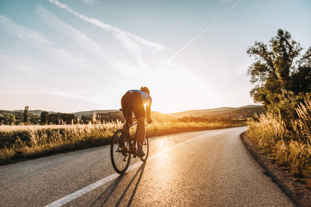

Cycling
Cycling, an exhilarating blend of fitness and adventure, propels you into the great outdoors. The rhythmic pedal strokes create a seamless connection between body and bike, while the wind whispers through. Whether navigating city streets or exploring scenic trails, every ride is a journey of self-discovery and well-being. From the rush of speed to the tranquil moments of solitude, cycling is more than exercise; it's a liberating experience that fosters a profound connection with the world around you. Embrace the joy of the open road and let the wheels spin your story of exploration and vitality.
Playing Football
Football, the beautiful game, is my joyous escape into a world of passion and camaraderie. The thrill of the pitch, the strategic plays, and the roar of the crowd create an electrifying atmosphere. Playing or watching, football fills my heart with pure enjoyment, making every moment unforgettable.
Mountain climbing
Mountain climbing, a breathtaking odyssey into nature's grandeur, is my ultimate adventure. Each ascent is a test of strength and resilience, yet the panoramic views from towering peaks reward the effort. The thrill of conquering summits and the serenity of high-altitude solitude make mountain climbing an exhilarating and soul-enriching pursuit.
Passionate about Christian music, its soul-stirring melodies and uplifting lyrics resonate deeply within me. The harmonies inspire joy, peace, and a profound connection to faith, creating a soundtrack for my spiritual journey.